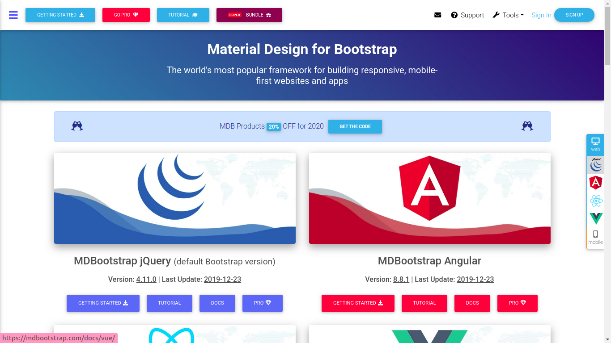
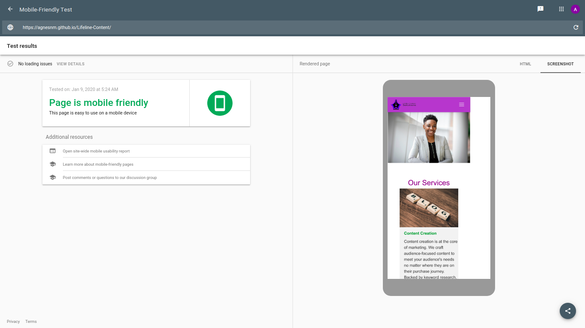
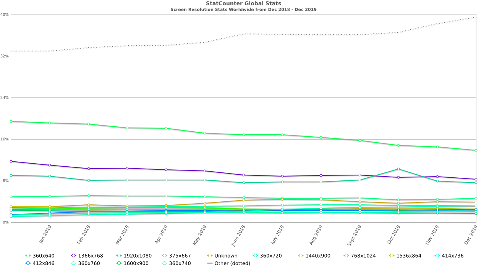
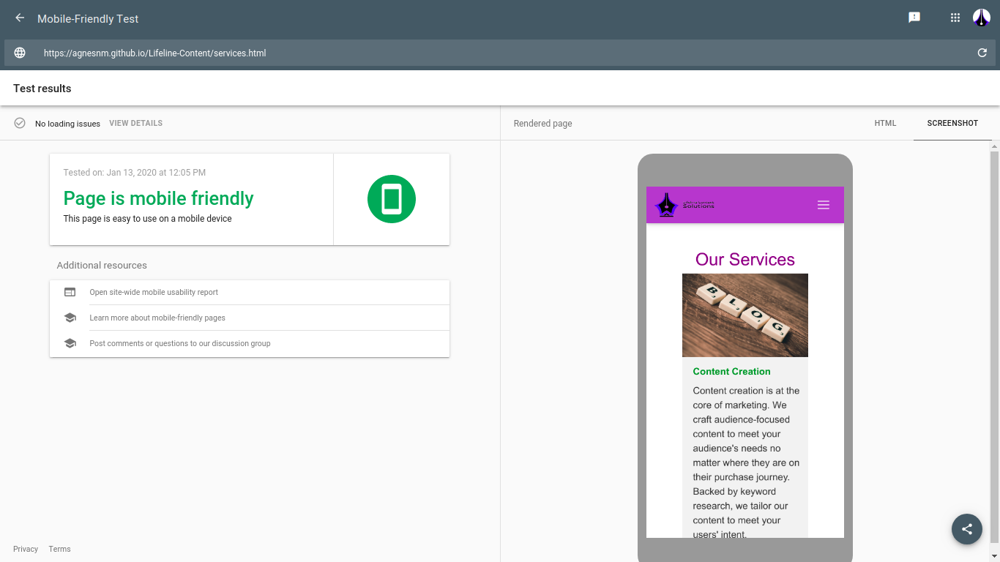

Responsive Website Design: The Comprehensive Guide [2020]
Responsive web design is a big deal. This is because your users are highly likely to find you via their smartphones. What this simply means is that your site needs to look great on mobile devices, especially smartphones.
According to Business Today, Kenya has a 91% smartphone penetration, which is way above the African average at 80%. Does this begin to show you why ensuring that your users can easily and effectively use your site on their smartphones is a priority?

How the responsive website design journey began
Setting high standards is one of my greatest strengths (or weaknesses), depending on how you look at it. A few weeks ago, I set myself to create a website for my business from scratch, and ensure that, eventually, it will be properly optimized, in terms of SEO. My first goal was to ensure that it would be mobile friendly.
Armed with my newly acquired web development skills, and several years of SEO experience under my belt, I thought this was going to be easy peasy. After all, Bootstrap assured me that:
"Extra small devices (portrait phones, less than 576px)... No media query since this is the default in Bootstrap"
Yet, normal smartphone screen size is 360px X 640px. So I sat back knowing that Bootstrap had my back, only to be taken aback by how terribly my page rendered (I cannot even share those screenshots. They are so embarrassing).
Anyway, buckle up for the responsiveness journey I am about to take you on...
Google test
First things first. Is your site is mobile-friendly? We can only ask the big guys - Google, who have a mobile-friendliness test that you can use.
All you need to do is paste your URL here: 

But, how do you get to achieve mobile-friendliness?
This part is going to get a little technical. However, you can talk to your web designer or developer about some of the concepts that I will talk about here and they will help you understand.
First things first
Your website is built on something called HTML (HyperText Markup Language). If you have ever tried to access your site’s page source code, you have seen content marked by these tags <>.
If you are using Wordpress, and have ever needed to access the header.php file, you have seen this code (you are advised not to edit it unless you know what you are doing).
However, if you have never accessed your site’s page source code, on Chrome: right-click on your site and choose ‘view page source code’.
Here is an example of Google’s page source code:  Image source: https://www.google.com/
Image source: https://www.google.com/
You can see content that has these tags <>, for example, 'html, and 'head'. Your site’s content exists between these tags.
In order to make your site look good, something else called CSS (Cascading Style Sheets) is used. This is what we are also going to use to make our site mobile-friendly (or responsive).
There are other ‘helpers’ called frameworks or libraries that are used in order to make it easier to implement CSS. One such framework is Bootstrap.  The rest of the article is going to be heavily focused on Bootstrap, and in particular, mdBootstrap (material design for Bootstrap).
Third-party tool: material design for Bootstrap
I used mdBootstrap, after all, I wanted the site to look really great, with time saved where possible. This is where ladies and gentlemen my nightmare with page responsiveness began. But, I am going to use lessons from my nightmare to make it easy for you to create a responsive web page from scratch using HTML and CSS (mdBootstrap).
First, go through the documentation
It is difficult to use something you have never used without reading its manual, right? Despite being generation Y and Z people who are so used to tech and screens that we can somehow instinctively know how to find a way around, with mdBootstrap, you are better off using their map - their manual - their documentation. It might seem daunting at first, but it will help you understand what different aspects do.
‘Connect’ mdBootstrap to your webpage
Work with your developer to ‘connect’ your webpage to mdBootstrap. However, if you are a DIY person, get access to the CDN links that you need from mdBootstrap and paste them in the
section of your index.html page. If you are using WordPress, you can make changes to your CSS editor.Start with the navbar
Your navbar is what makes it possible to navigate your site. It contains shortcuts to important places on your site and is one way that users will use to judge your site. If your navbar is difficult to use, users might not stay long on your site.
There are different types of navbars:- the hamburger menu
- a mega menu
- side nav
I will delve into this in a later blog post. The focus of this article will be what I would call ‘the normal navbar’.

This navbar is quite simple and straightforward. However, navbars can get really complex:  Image source: https://www.batakenya.com/
Image source: https://www.batakenya.com/
The above site includes more items in their navbar including product categories and programs that their customers may be interested in joining.  Image Source: https://www.acdivoca.org/
Image Source: https://www.acdivoca.org/
On the above site, the navbar has a dropdown menu in addition to the main categories. It also includes ‘careers’ and ‘volunteer’ categories. The privacy policy notification may also be viewed as part of the navigation, as it gives the user a chance to directly navigate to the privacy policy. It is also a smart way to show compliance in the wake of GDPR and companies needing to be more transparent about how the use PII (Personally Identifiable Information).
Complex navbars need to make use of breadcrumbs (we will delve into this more in future)
mdBootstrap navbar features
Now that you have an idea about navbars, let’s look at aspects that you will get from mdBootstrap.
Classes
Navbar features on mdBootstrap are implemented via classes.
-
Navbar
In order to ensure that your navbars are responsive, you need to have a class called navbar which acts as a wrapper or container.
-
Navbar-collapse
In combination with the navbar-expand class, this class is what helps the navbar collapse behind a button or a hamburger menu on smaller screens.
-
Navbar-toggler
This class, even as its name suggests, is what helps to toggle between collapsing content and expanding it.
Tips
-
Wrap your navbar content in nav tags. Alternatively, if they are in a div, add ‘role=navigation’. This allows for accessibility by Bootstrap.
-
Depending on the type of navbar that you choose, you may have to separate your content into different pages, rather than have is a single web page.
There are many other aspects of navbars that you can include that you can find in the mdBoostrap navbar documentation. Our focus here is only on aspects that directly involve responsiveness.
Once your navbar begins to look good on smaller screens. It’s time to dive in deeper. Note that, you can still use the Google mobile-friendliness page to see how your navbar renders. Alternatively, you can use the Developer Tools on Chrome, and then the toggle device toolbar.
Using Developer Tools to check for responsiveness
- Right-click anywhere on your website or webpage
- Choose ‘inspect’ from the dropdown menu
- Click the second icon which reads ‘Toggle Device Toolbar’
- Your site view changes
- Choose the devices that you want to view
In the above image, the Toggle Device Toolbar has an icon with 2 screen sizes.
Important styling aspects to take care of
There are styling aspects that you need to get right first before you even think about different screen sizes, and how you would want your site to render.The header image
Your header image should first of all be of high quality. Next, use the following CSS styling on it:width: 100%; height: auto;
Note that the height is not fixed. This will allow it to adjust appropriately to the screen size available.
Logo size
The size of your logo matters. If you use an excessively small logo, it will lose its quality on your site. On the other hand, a big logo will take up too much space making your navbar and top of the fold content ( what users can see without scrolling) use up space that you could use to further interact with your customer.
Different platforms use different logo sizes. On WordPress, the logo size is determined by the theme template that you choose. The logo type and orientation matters. If it is horizontal, 250 x 100px and 400px X 100pxwill do. If it is a vertical one 160px X 160 px will do. Smaller logo sizes (less than 100px) as are ideal though. If you include your logo in your header, go for a height of 20px to 30 px.
Overflow
This is when your page has white space on the right. It passes the Google mobile-friendliness test though.  This is referred to as a page that ‘overflows’. What you need to do is add a wrapper around your entire site’s content, which is between the body tags. This is because browsers will ignore overflow styling if it is attached to the body element. You can also add a div with the class as ‘wrapper’ or ‘container-fluid’. You then need to add the following styling to the body element:
overflow-x:hidden; position:relative;
Media queries and breakpoints
The next thing you need to do is think about the screen sizes that your customers are going to use to view your site. According to a study called Screen Resolution Stats Worldwide, 360x640 was the most widely used screen size globally, as of December 2019. 1366x768 was the most used for desktop. Such stats arm with an idea of popular screen sizes which is what you are going to use to define how particular sections and elements of your site should render on different screen sizes.  These screen sizes are known as breakpoints.
Media queries refer to the styling that you will apply, in combination with breakpoints in order to ensure that your elements render as desired. Features or elements to take care of using media queries Remember, we already took care of the navbar’s responsiveness. Let’s look at other elements that you need to take care of.
Bootstrap card decks

If you have used cards like the above to showcase summarized content, then you need this to render in a block format when used on a smaller screen as in:  In order to achieve this, you can use the following styling:
display: flex; flex-flow: column wrap; Or display: block; width: 100%;
All in all
As you can see, achieving mobile-friendliness is no mean feat. We have looked at the aspects to take into consideration above. Why not ensure that your site is mobile friendly?